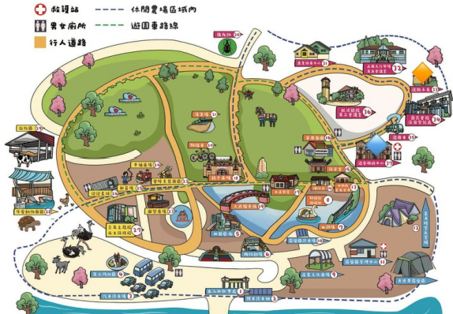

10.09 FRI / 星期五
夜教集合
18:30–19:00
機電大樓 4055-1 教室
當天機電大樓一樓會有工作人員，引導大家前往教室。
出發前先讀夜教提醒 ↓BEFORE WE GO / 行前通知
光是醫外遇見你，就用盡一生機會
哈囉哈囉大家好！期待已久的宿營終於要來啦。
三天兩夜的回憶，從這份出發前的小提醒開始。
請仔細閱讀，確認行李帶齊，開心出門、平安回家。
01 / MEETING POINT
把時間與地點記下來，
到場後跟著工作人員的引導走。
10.09 FRI / 星期五
18:30–19:00
機電大樓 4055-1 教室
當天機電大樓一樓會有工作人員，引導大家前往教室。
出發前先讀夜教提醒 ↓10.10 SAT / 星期六
07:30–07:50
體育館門口
08:00 準時發車，逾時不候。
活動期間若因個人因素無法前來，恕不退費。
當天不提供早餐，請吃完早餐再來集合！
02 / PACKING LIST
邊整理，邊勾選。
勾選進度只儲存在這台裝置。
已準備 0 / 12 項
因應環保政策，住宿地點不提供牙刷、牙膏等一次性盥洗用品。
準備活動衣物、拖鞋及額外乾淨換洗衣物。建議避免白色或容易透色的衣服。
車程預計約 1.5–2 小時，易暈車請自行準備暈車藥。戶外活動請防曬、防蚊，隨時補充水分。
03 / THE ITINERARY
從校園破冰到安平散步，
集合時間請以本頁集合通知為準。
FRI / OCTOBER
校園裡，先認識彼此
SAT / OCTOBER
走馬瀨，一起全力玩
SUN / OCTOBER
帶著回憶，走進安平
04 / AFTER DARK
10/9（五）18:30–19:00
機電大樓 4055-1 教室集合
包含內衣褲，請出門前先確認。
05 / CAMP MAP

06 / FIND YOUR TEAM
一至十小名單如下。
點擊圖片可開啟原圖放大查看。


07 / TAKE CARE
遇到問題，第一時間找隊輔。
你的安全永遠是第一優先。